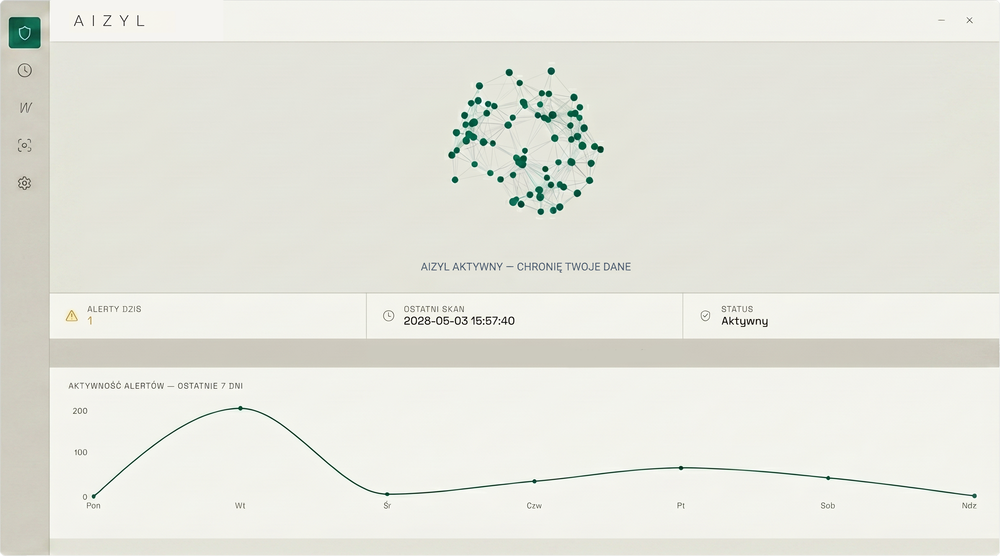
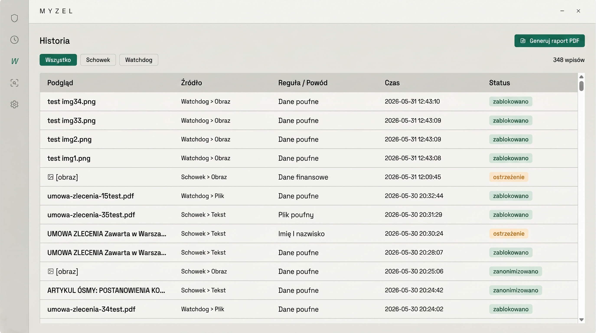
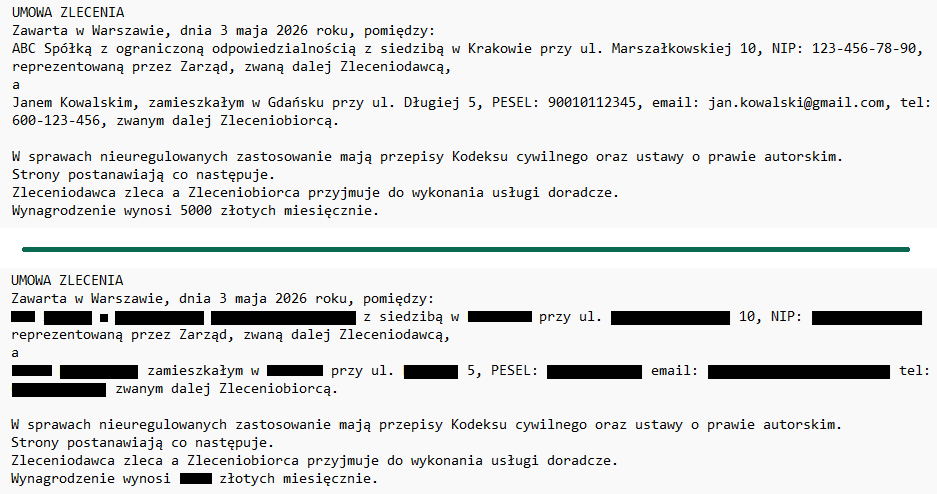

Ochrona danych przed wyciekiem do AI · Zgodność z RODO i AI Act
Twoi pracownicy właśnie wkleili dane klientów do ChatGPT. Wiesz o tym?
Aizyl działa w tle na każdym komputerze w twojej firmie i zatrzymuje dane poufne zanim trafią do zewnętrznych serwisów AI. Umowy, PESELe, NIP-y, dane klientów — wszystko zostaje tam gdzie powinno.
Działa lokalnie — zero danych w chmurze · Zgodny z RODO i AI Act · Windows 10/11

AI Act wszedł w życie. RODO obowiązuje od 2018 roku. Twoja firma nadal nie jest gotowa.
Nie wiesz co robią twoi pracownicy z danymi klientów
Każdego dnia dziesiątki fragmentów umów, danych osobowych i dokumentów firmowych trafiają do ChatGPT, Copilota i Claude. Nie dlatego że pracownicy chcą zaszkodzić — dlatego że AI naprawdę pomaga. I nikt tego nie kontroluje.
AI Act wprowadza nowe obowiązki i kary do 35 mln EUR
Firmy używające systemów AI do przetwarzania danych osobowych muszą zapewnić odpowiednie środki techniczne. Brak dokumentacji że firma dołożyła należytej staranności to prosta droga do maksymalnej kary.
Nikt nie zrezygnuje z AI — i nie powinien
Zakaz używania ChatGPT w firmie to mit. Pracownicy i tak go używają, tylko ukrywają. Jedynym skutecznym rozwiązaniem jest narzędzie które pozwala korzystać z AI bezpiecznie.
Naruszenie RODO: kara to nie tylko pieniądze
Do 20 mln EUR lub 4% globalnego obrotu. Plus obowiązek powiadomienia poszkodowanych. Plus utrata reputacji. Plus roszczenia cywilne od klientów.
Rozporządzenie UE 2024/1689 opublikowane. Firmy mają czas na przygotowanie.
Zakaz zakazanych praktyk AI. Obowiązek szkoleń AI literacy dla pracowników.
Obowiązki dla dostawców modeli GPAI. Możliwość nakładania kar.
3 miesiące do kluczowego terminu. Polska ustawa wykonawcza przyjęta przez Radę Ministrów.
Pełne przepisy dla systemów wysokiego ryzyka. Obowiązek dokumentacji i oceny ryzyka.
Wszystkie przepisy AI Act w pełni obowiązują.
Aizyl to dowód że twoja firma dochowała należytej staranności.
Art. 25 i 32 RODO wymagają wdrożenia odpowiednich środków technicznych ochrony danych. Aizyl jest dokładnie tym — technicznym środkiem który można pokazać kontrolerowi. Pełna historia alertów, raporty PDF, automatyczna anonimizacja. Twoja firma nie tylko chroni dane — udowadnia że je chroni.
Aizyl znacząco redukuje ryzyko wycieku danych i stanowi udokumentowany środek techniczny zgodny z RODO. Żadne narzędzie nie daje 100% gwarancji ochrony — Aizyl jest jedną warstwą kompleksowej polityki bezpieczeństwa.

Instalujesz raz. Aizyl pilnuje cały czas.
Instalujesz na każdym stanowisku
5 minut konfiguracji. Aizyl uruchamia się z Windows i działa w tle. Użytkownik nie musi robić nic.
Aizyl wykrywa w ułamku sekundy
Każdy tekst, obraz i plik kopiowany do AI jest analizowany natychmiast — lokalnie, bez wysyłania gdziekolwiek.
Dane są chronione automatycznie
Ostrzeżenie, blokada lub automatyczna anonimizacja — zależnie od konfiguracji. Pracownik widzi komunikat, ty masz log.
Co dokładnie robi Aizyl
Monitoring schowka
Tekst, obrazy i pliki kopiowane przez pracownika. Aizyl sprawdza wszystko co trafia do schowka zanim trafi dalej.
OCR obrazów
Kopiujesz zdjęcie dokumentu lub skan? Aizyl odczyta tekst z obrazu i sprawdzi go tak samo jak zwykły tekst.
Watchdog folderów
Monitorowane foldery skanowane w czasie rzeczywistym. Każdy nowy lub zmieniony plik jest automatycznie analizowany.
Anonimizacja
Zamiast blokować pracę — Aizyl podmienia dane poufne na etykiety. Pracownik może pracować z AI bez ryzyka wycieku.
Menu kontekstowe
Prawym przyciskiem na dowolny plik — "Sprawdź z Aizyl". Wynik pojawia się na pasku w kilka sekund.
Shadow AI Audit
Aizyl wykrywa połączenia z zewnętrznymi serwisami AI w sieci. Wiesz które narzędzia AI używają twoi pracownicy.
Historia i raporty
Pełny log każdego zdarzenia. Raport PDF i eksport CSV gotowy dla audytora lub IOD.
Pasek systemowy
Dyskretny pasek informuje o bieżącym statusie ochrony. Zero rozpraszania, maksimum informacji.
AizylAI — lokalny model który rozumie umowy
Standardowe narzędzia DLP wykrywają słowa kluczowe. AizylAI rozumie kontekst. Wie że "strona umowy" to nie strona internetowa. Wie że "wartość kontraktu" to dane finansowe które należy chronić. Wszystko działa lokalnie — model AI nigdy nie opuszcza twojego komputera.
- ✓ Zero danych wysyłanych do chmury AI
- ✓ Inteligentna anonimizacja z etykietami
- ✓ Wykrywa dane ukryte między wierszami
- ✓ Włączany jednym przełącznikiem

Inne narzędzia DLP wysyłają twoje dokumenty na swoje serwery. Aizyl nie.
Alternatywy
- ✗Lokalny serwer AI: 45 000 – 450 000 PLN
- ✗Enterprise DLP: dziesiątki tysięcy PLN rocznie
- ✗Chmurowe DLP: twoje dokumenty na obcych serwerach
- ✗Brak ochrony: kara do 35 mln EUR (AI Act)
Aizyl
- ✓Od 49 PLN / stanowisko / miesiąc
- ✓Zero danych w chmurze
- ✓Instalacja w 5 minut
- ✓Działa bez internetu
- ✓Dokumentacja dla kontrolera
Jedna licencja. Jedno stanowisko. Pełna ochrona.
14 dni próbnych — wymagana karta kredytowa. Rabat 20% przy płatności rocznej.
Cennik obowiązuje od dnia launchu. Zapisz się teraz i dowiedz się pierwszy.
Lite
49 PLN /seat/mo
- ✓ Monitoring schowka (tekst)
- ✓ Menu kontekstowe dla plików tekstowych
- ✓ Podstawowy pasek powiadomień
- ✓ Historia alertów
- ✓ Tryby: ostrzegaj / blokuj
- ✓ Hasło admina
- ✓ Autostart z Windows
Pro
99 PLN /seat/mo
- ✓ Wszystko z Lite
- ✓ Monitoring obrazów w schowku
- ✓ Monitoring kopiowania plików
- ✓ Menu kontekstowe dla obrazów
- ✓ Pasek rozszerzony
- ✓ Podstawowa anonimizacja tekstu i obrazu
- ✓ Watchdog — 1 folder
- ✓ Shadow AI Audit
- ✓ Raporty PDF
Enterprise
149 PLN /seat/mo
- ✓ Wszystko z Pro
- ✓ AizylAI — lokalny LLM
- ✓ Inteligentna anonimizacja
- ✓ Watchdog — wiele lokalizacji
- ✓ AizylFleet (wkrótce)
Dla 5-osobowej firmy Pro = 495 PLN/miesiąc. Jeden lokalny serwer AI to min. 45 000 PLN jednorazowo. Jedna kara RODO to nawet 20 mln EUR.